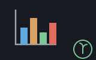

A reckoner seed: plotter, a chart from the numbers on the stack — machines/seeds/seedplotter.shoddy

A session that has just computed a column of numbers is one word away from a histogram of them. That is the whole case for this seed — the file that bridges a machine's words into the calculator. Every other charting story starts with now write a program.
> 640 480 "p" PLOTOPEN
> "p" { "Mon" "Tue" "Wed" "Thu" "Fri" } { 12 19 7 23 15 } PLOTBAR
> "p" "Bales carded this week" PLOTTITLE
> "p" PLOTBLITFive chart kinds — histogram, bar, pie, box and scatter — plus a title, a blit (the word that puts the drawing on screen), and a PNG.
The simplest of the resource seeds, and worth saying why.
plotter's words take and return a
Scribbler — a drawing surface. The machine keeps no state of its
own at all: no position like a turtle's, no
layout remembered between calls. So the binding is a scribbler slot and
nothing else, exactly as seedscribbler's is.
RckUpdated never comes into it.
The work was the guard list. plotter raises three errors of its own — a histogram with no bins, a bar chart with a negative value, a pie chart with a value that is not positive. It also aborts in four places it does not announce, and those are the ones worth finding before a session does:
BarChart divides by the number of values,
so an empty set divides by zero.Zip stops at the shorter list, so a
scatter of mismatched lengths would draw part of the data — a
wrong chart rather than a refused one, which is the worst of the seven.A guard list covering only the three named errors would leave a session four ways to lose its work. So all seven are checked before any drawing starts.
A window smaller than its own margins is refused. The margins are fixed, so a small enough window has no plot area at all. Every bar would be drawn at a negative width — a blank rectangle rather than an error. The refusal names the smallest size that works. That size is computed from plotter's own margins, so it moves with them.
Each chart answers nothing, in the shape
seedscribbler and
seedturtle set. The session holds a name, not
a surface, so there is nothing to DROP.
There is no PLOTAXES. Every one of the five
charts draws its own axes, so a session that could draw them separately
could only draw them twice.
> 640 480 "p" PLOTOPEN
ok: opened p
> "p" { 3 1 4 1 5 9 2 6 5 3 5 } 5 PLOTHISTOGRAM
> "p" PLOTBLIT
> "p" { "north" "south" } { 40 60 } PLOTPIE
> "p" "shipments" PLOTTITLE
> "p" "pie.png" PLOTSAVE
x: True
> "p" { 1 2 3 } { 1 2 } PLOTSCATTER
PLOTSCATTER: 3 X VALUES AND 2 Y VALUES — THEY MUST PAIR UP
> "p" CLOSE
ok: closed pCharts draw over one another on the same surface, so
PLOTOPEN a fresh window when you want a fresh chart. The
window survives UNDO, and halifax
shuts it when you quit.
| Word | Description |
|---|---|
| PLOTOPEN ( w h name -- ) | Open a w by h chart window, white, and keep it under that name. 640 by 480 is a comfortable size; anything smaller than the margins is refused. |
| PLOTHISTOGRAM ( name xs bins -- ) | A histogram of xs in that many bins, with axes and labels. |
| PLOTBAR ( name labels values -- ) | A bar chart. One label per value, every value 0 or more. |
| PLOTPIE ( name labels values -- ) | A pie chart with a legend. One label per value, every value above 0. |
| PLOTBOX ( name xs -- ) | A box plot: quartiles, median, whiskers to 1.5× the inter-quartile range, outliers as dots. |
| PLOTSCATTER ( name xs ys -- ) | xs against ys as points. The two lists must be the same length. |
| PLOTTITLE ( name s -- ) | Write s across the top of the chart. |
| PLOTBLIT ( name -- ) | Show what has been drawn. A chart nobody can see is one nobody blitted. |
| PLOTSAVE ( name path -- ok ) | Write the chart to a PNG file; True on success, False on a path it cannot write. |
CLOSE and BOUND are
reckoner's own and work here without this seed
saying anything about them.
| User | How | |
|---|---|---|
| halifax | The calculator's charts — a window opened from the prompt and drawn on with whatever numbers the session has to hand. | |
| sparky | Sparky folds it too: a chart blitted during a line arrives as a picture in the same answer. |
A mill claims this seed by folding RckSeedPlotter over its
reckoner state, which is all halifax does.
| Machine | Why | |
|---|---|---|
| cuttle | The Cell type the data crosses the bridge as. | |
| plotter | The domain this seed bridges: the five charts, the axes and labels they draw, and the margins the size check is computed from. | |
| reckoner | RckReg and the argument readers, and the named-resource table that makes an open chart reachable after UNDO. | |
| seq | List plumbing under the data readers and the length checks. |